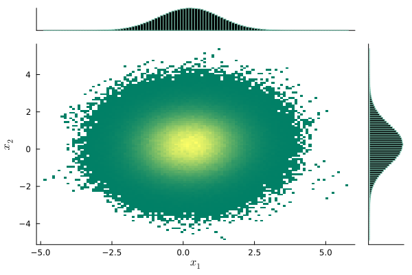

総研大５年一貫博士課程・中間評価
総合研究大学院大学（５年一貫博士課程）
1/27/2025
1 2023 年：ノンパラメトリクス
2023 年度は (Giné and Nickl, 2021) の第２章を扱った
ここでは Gauss 過程の上限に関する集中不等式を取り上げる．
A Blog Entry on Bayesian Computation by an Applied Mathematician
$$
$$
1.1 等周不等式
体積測度 \mu が等しい可測集合のうち，球が最小の周長を持つ．
- Borel 可測集合 A\subset\mathbb{R}^n に関して，\epsilon-閉近傍 を次のように定める： A_\epsilon:=\left\{x\in\mathbb{R}^n\mid d(x,A)\le t\right\},\qquad t>0.
- 実は A_\epsilon は Borel 可測とは限らないが，Lebesgue 可測ではある．
古典的等周不等式 (Schmidt, 1948)-(Lévy, 1951)
n-次元球面 S^n\subset\mathbb{R}^{n+1} に関して，A\subset S^n を Borel 可測，C を同体積の（測地）球とすると， \mu(C_\epsilon)\le\overline{\mu}(A_\epsilon),\qquad\epsilon>0.
1.2 正規分布に関する等周不等式
(Giné and Nickl, 2021, p. 31) 定理 2.2.3
\gamma_n を \mathbb{R}^n 上の標準正規分布とする．A\subset\mathbb{R}^n を Borel 可測， H_a:=\left\{x\in\mathbb{R}^n\mid(x|u)\le a\right\},\qquad a\in\mathbb{R},u\in\mathbb{R}^n\setminus\{0\}, を同体積の affine 半空間 とすると， \gamma_n(H_a+\epsilon B^n)\le\overline{\gamma_n}(A_\epsilon+\epsilon B^n),\qquad\epsilon>0.
\mathbb{R}^n だけでなく \mathbb{R}^\infty 上でも成り立つ．半径 \sqrt{m} の n+m 次元球面 S^{n+m} 上の一様分布の，最初の n 次元周辺分布は，m\to\infty の極限で正規分布に収束する (Poincaré, 1912)： (\mathrm{pr}_{1:n})_*\mathrm{U}{\sqrt{m}S^{n+m}}\Rightarrow\operatorname{N}_n(0,I_n).
1.3 中央値周りへの集中不等式
\{X_t\}_{t\in T} を可分な中心 Gauss 過程で，ほとんど確実に上限 \|X\|_\infty が有限であるとする．このとき，\|X\|_\infty の中央値 M に関して，1 \operatorname{P}\biggl[\biggl|\|X\|_\infty-M\biggr|>u\biggr]\le\exp\left(-\frac{u^2}{2\sigma^2}\right),\qquad u>0,\sigma^2:=\sup_{t\in T}\mathrm{V}[X_t].
同様の命題を平均値の周りに関しても示せる．係数 2 が前につくものは (Gross, 1975) による正規分布に関する対数 Sobolev 不等式から導ける．
1.4 Gibbs 分布の集中
Curie-Weiss 模型の Hamiltonian H^n(x):=-\frac{1}{2n}\sum_{i,j=1}^nx_ix_j-h\sum_{i=1}^nx_i,\qquad x\in\{\pm1\}^n,h\in\mathbb{R}, が定める Boltzmann-Gibbs 分布 \pi^n(x)\,\propto\,e^{-\beta H^n(x)},\qquad\beta>0, と 磁化密度 m^n(x):=\overline{x} に関して， \pi^n\left[\biggl|m^n-m^*\biggr|\le\frac{\beta}{n}+\frac{t}{\sqrt{n}}\right]\le2\exp\left(-\frac{t^2}{4(1+\beta)}\right).
証明は Stein の方法による．
1.5 Metropolis-Hastings 法のスケーリング
磁化密度のサンプリング
Hamiltonian H^n は磁化密度 m^n の二次関数 H^n(m)=-n\left(\frac{1}{2}m^2+hm\right), \pi^n(m)\propto e^{-\beta H^n(m)}.
配置空間 \Omega:=\{\pm1\}^n 上の一様な酔歩が（中心化された）磁化の空間 (\mathbb{R},\overline{\pi}^n) 上に定める MH 法は，高温領域では Gauss 分布に対する Langevin 拡散に n\to\infty で弱収束する： dY_t=-2l(h,\beta)Y_t\,dt+\sigma(h,\beta)\,dB_t.
MH 法の収束は O(n) のスケーリングで動く．すなわち生成作用素 L^nf:=n\biggr(P^nf-f\biggl),%\qquad f\in\cD(L^n), が Langevin 拡散に収束する．
一方で Lifted MH 法は O(n^{1/2}) のスケーリングで収束する： L^nf:=\sqrt{n}\biggr(P^nf-f\biggl),%\qquad f\in\cD(L^n).
1.6 リフティング
(Lefted MH Turitsyn et al., 2011)
状態空間を２つに分け，目標分布を等分配する： \widetilde{\mathbb{R}}:=\mathbb{R}\times\{\pm1\},\quad\widetilde{\pi}:=\pi\otimes\frac{1}{2}. \mathbb{R} 上の１つの遷移核 Q から，\mathbb{R}\times\{+1\} 上と \mathbb{R}\times\{-1\} 上とで異なる遷移核 \widetilde{Q}^\pm を作る構成を リフティング という．
このとき 歪釣り合い条件 を満たすように作る： \pi(x)\widetilde{Q}^+(x,y)\propto\pi(y)\widetilde{Q}^-(y,x).
\widetilde{Q}^+ では磁化の増加方向，\widetilde{Q}^- では減少方向にのみ提案するとする．
このとき Lifted MH 法は O(n^{1/2}) のスケーリングで Zig-Zag 過程 に収束する： Lf(m,\theta):=\alpha(h,\beta)\theta f'(m,\theta)+ (\theta l(h,\beta)m)_+\biggr(f(m,-\theta)-f(m,\theta)\biggl).
- スケーリングが落ちている
- 拡散項がない（定常状態からの逸脱）
アルゴリズムの高速化が伺える
1.7 MLSS 3/5〜3/15/2024

拡散過程に対する粒子フィルターが，タイムステップ \Delta\to0 の極限でジャンプ付き過程になる様子を調べた (Chopin et al., 2022) について発表．
同様の内容で学振申請し，不採択A．

2 2024 年度前期：Markov 過程の収束

2024 年度前期は (Kulik, 2018) の第３章を扱った
ここでは連続時間 Markov 過程の劣指数エルゴード性のドリフト条件による特徴付けを取り上げる．
2.1 離散時間のエルゴード定理
指数エルゴード定理
Markov 連鎖 X の確率核 P:E\to E は次の２条件を満たすとする：
- ドリフト条件：ある関数 V:E\to[1,\infty) と定数 \gamma\in(0,1),K\ge0 が存在して PV\le\gamma V+K.
- 局所 Dobrushin 条件：任意の c>0 に対して， \sup_{(x,y)\in V^{-1}([1,c])^2}\|P(x,-)-P(y,-)\|_\mathrm{TV}<2.
このとき P は指数エルゴード的：ただ一つの確率分布 \mu\in\mathcal{P}(E) が存在し \|P^n(x,-)-\mu\|_\mathrm{TV}\le C_1e^{-C_2n}\biggr(V(x)+(\mu|V)\biggl),\qquad x\in E,n\ge1.
2.2 連続時間の劣指数エルゴード定理
ステートメント
E を Polish距離空間，X を Feller-Dynkin 過程とする．連続関数 V:E\to[1,\infty) が存在して 後述の２条件 を満たすならば，任意の T>0 に対して定数 C>0 が存在して次が成り立つ： \|P^t(x,-)-P^t(y,-)\|_\mathrm{TV}\le C\frac{V(x)+V(y)}{\lambda(t)},\qquad x,y\in E,t\ge T. \lambda(t):=\Phi^{-1}(t),\Phi(u):=\int^u_1\frac{ds}{\phi(s)}.
この V は ドリフト関数 ともいい，エルゴード性証明の鍵を握る．
証明法は (Kulik, 2018) が扱う skelton 連鎖 X_n:=X_{hn}\;(h>0,n=1,2,\cdots) に帰着する方法と，再起過程 (regeneration process) を用いた (Hairer, 2021) による直接的方法がある．
2.3 成立条件
条件１：ドリフト条件
ある K\in\mathbb{R} と全射かつ単調増加な狭義凹関数 \phi:\mathbb{R}_+\to\mathbb{R}_+ が存在して V(X_t)-Kt+\int^t_0\phi(V(X_s))\,ds は任意の x\in E に関して \operatorname{P}_x-優マルチンゲールである．
条件２：局所 Dobrushin 条件
任意の c\ge1 に関して下部集合 V^{-1}([1,c]) はコンパクトで，ある h>0 が存在して P^h は V^{-1}([1,c]) 上局所 Dobrushin である： \sup_{(x,y)\in B_c}\|P^h(x,-)-P^h(y,-)\|_\mathrm{TV}<2, B_c:=\left\{(x,y)\in E^2\mid V(x)+V(y)\le c\right\}.
2.4 多項式収束域での比較
ポテンシャル U\in C_p^\infty(\mathbb{R}^d) が定める Langevin 拡散過程 dX_t=-\nabla U(X_t)\,dt+\sqrt{2\beta^{-1}}\,dB_t
次が \kappa\ge0 について成り立つならば指数エルゴード的：1 \limsup_{\lvert x\rvert\to\infty}\left(\nabla U(x)\,\middle|\,\frac{x}{\lvert x\rvert^{\kappa+1}}\right)<0. \kappa\in(-1,0) で劣指数エルゴード的： \|P_t(x,-)-\mu\|_\mathrm{TV}\le Ce^{\alpha U(x)}e^{-ct^{\frac{k}{1-k}}}. \kappa=-1 で多項式エルゴード的．
リフレッシュなしの Zig-Zag サンプラー は目標分布の負の対数尤度 U があるコンパクト集合の外で \lvert\nabla U(x)\rvert\ge\frac{1+\nu}{\lvert x\rvert},\quad\nu>0, を満たすならば多項式エルゴード的．
t-分布もこれを満たす： \pi(x)=\frac{1}{\pi}\frac{1}{1+\lvert x\rvert^2}
この際のレートは Langevin アルゴリズムのもの (Jarner and Tweedie, 2003) よりも速い
3 2024 年度後期：最適輸送
2024 年度後期は (Figalli and Glaudo, 2023) の第２章を扱った
ここでは (Brenier, 2003) による Euclid コストに関する最適輸送写像の表示を取り上げる．
3.1 最適輸送写像の見つけ方
(Monge, 1781) の最適輸送問題
２つの確率分布 \mu,\nu\in\mathcal{P}(\mathbb{R}^d) の間の輸送 T:\mathbb{R}^d\to\mathbb{R}^d T_*\mu=\nu のうち，総じた輸送「コスト」 \min_{T\in\mathcal{L}(\mathbb{R}^d;\mathbb{R}^d)}\left(\int_{\mathbb{R}^d}\lvert x-T(x)\rvert^2\,d\mu\right)^{1/2}. を最小にする T を 最適輸送 という．
この T の総輸送コストを 2-Wasserstein 距離 W_2 という．
(Brenier, 1987) の定理
最適輸送 T:\mathbb{R}^d\to\mathbb{R}^d は次の２条件を満たせば，ただ一つ存在する：
- \mu,\nu は２次の絶対積率を持つ
- スタートの分布 \mu は絶対連続
加えて，ある真凸関数 \varphi:\mathbb{R}^d\to\mathbb{R}\cup\{\infty\} に関する勾配として表せる： T=\nabla\varphi. さらにある \varphi に関して この条件を満たす輸送 T_*\mu=\nu は最適輸送のみ．
3.2 Wasserstein 勾配流へ
実はポテンシャル U に関する Langevin 拡散は，KL 乖離度 \operatorname{KL}(\rho,e^{-V})=\int_{\mathbb{R}^d}\rho(x)\log\frac{\rho(x)}{e^{-U(x)}}\,dx に関する「最適輸送の繰り返し」と見れる．
数学的には Wasserstein 距離空間 (\mathcal{P}_2(\mathbb{R}^d),W_2) 上の勾配流として定式化することができる．
Sampling as Optimization
(Dalalyan, 2017), (Wibisono, 2018), (Korba and Salim, 2022) らにより自覚された，サンプリング法一般を，\mathcal{P}(\mathbb{R}^d) 上の様々な幾何構造に関する最適化手法として捉え，これを通じて比較することができるのではないか？という考え方．
Markov 過程のエルゴード性に対する新たな視点になり得る．
3.3 Sampling as Optimization
エルゴード性の様子を \mathcal{P}(\mathbb{R}^d) 上の幾何で調べることは，実用的な含意も多い．
Langevin Monte Carlo は KL 乖離度の Wasserstein 勾配に関する最急降下法と見れる．
Tempering SMC は，逆向き KL 乖離度に対する鏡像降下法と見れる．
正規化定数を計算する重点サンプリング法において，最適なテンパリング道は (1-\alpha)\pi_0+\alpha\pi,\qquad\alpha\in(0,1) の \{\alpha_i\}_{i=1}^n のスケジュールを，Wasserstein 距離に関して等幅になるようにしたものである．
全変動距離は一番強い位相でカップリングとの相性が良い． しかし Wasserstein 距離を初めとした他のカップリング距離に関するアプローチも可能 (Kulik, 2018)．
この話は面白すぎる．
4 現在の取り組み：PDMC パッケージの開発

開発したパッケージ PDMPFlux.jl からの出力
PDMC は 区分確定的モンテカルロ (Piecewise Deterministic Monte Carlo) の略．MCMC の後継と期待されている．
4.1 興味３分野
- 現状：１つ目に取り掛かり，２つ目を勉強中．
- １つ目の研究を始める初手として，パッケージ
PDMPFlux.jlを作成． - できれば学生のうちに３つ目のテーマの勉強までやりたい．
4.2 Zig-Zag 過程のシミュレーション
PDMP のシミュレーション
- 方向転換イベント がいつ起こるかをシミュレート
- イベント発生地点の列を出力1
- イベント間は決定論的に補間
難点
方向転換イベント のシミュレーション＝非一様な Poisson 過程の到着時刻のシミュレーション．
サンプラーのレート関数 \lambda(x,\theta)=(\theta|\nabla U(x))_+,\qquad i\in[d], から次の生存関数を持つ乱数 T_{n+1} を発生させる必要がある： \operatorname{P}[T_{n+1}\ge t]=\exp\left(-\int^t_0\lambda(\phi_s(Z_{S_n}))\,ds\right). 右辺の逆関数が必要だが，積分を数値誤差なく実行するのは不可能．
問題に合わせた棄却法が使われていた．
4.3 剪定の自動化 (Andral and Kamatani, 2024)
(Poisson Thinning Lewis and Shedler, 1979)
Poisson 過程に対する棄却法． m(t)\le M(t),\qquad t\ge0, を満たす２つの強度関数 m,M に対して，M から得られた Poisson イベントを確率 \frac{m(t)}{M(t)} で採択したものは m から得られた Poisson イベントと同分布である．
多項式の M を見つければ良い．
サンプラーの強度関数 m(t):=\int^t_0\lambda(\phi_s(Z_{S_n}))\,ds の上界 M(t) を，前回のイベント位置 Z_{S_n} に応じて自動的に見つける戦略が必要．
(Andral and Kamatani, 2024) のアルゴリズム
- m を自動微分し，[0,t_{\text{max}}] のグリッド上で勾配を計算
- 各グリッド上では両端点と，両端点の接線の交点との３点でバウンド
- t_{\text{max}}\to0 の極限で正確な上界になるため，t_{\text{max}} を適応的に小さく選ぶ
4.4 PDMPFlux.jl パッケージ
using PDMPFlux
function U_Gauss(x::Vector) # ポテンシャルを与えるだけで良い
return sum(x.^2) / 2
end
dim = 10 # 次元は与える必要あり
N_sk, N, xinit, vinit = 100_000, 100_000, zeros(dim), ones(dim) # ハイパーパラメータ
sampler = ZigZagAD(dim, U_Gauss) # サンプラーのインスタンス化, AD は自動微分のこと
output = sample_skeleton(sampler, N_sk, xinit, vinit) # PDMP のシミュレーション
samples = sample_from_skeleton(sampler, N, output) # サンプルの抽出
diagnostic(output) # サンプラーの診断
jointplot(samples) # サンプルの可視化

5 これから
パッケージ開発は今後の研究のため．応用もしたいが，更なるサンプラー開発や基礎的な研究の足がかりにしたい．
5.1 現状の PDMC アルゴリズム
基本的には拡張された空間上で動き，新たな変数 \theta を 速度 や momentum という： (x,\theta)\in\mathbb{R}^d\times\Theta,\qquad\Theta\subset\mathbb{R}^d.
(Bouncy Particle Sampler Bouchard-Côté et al., 2018)
\Theta=S^{d-1} と単位球面上に取る．
- イベントが起こったら，速度をサンプリングし直す： \Theta_{S_{n+1}}\sim\mathrm{U}(S^{d-1}).
- エルゴード性を保つためには定期的な向きの変更が必要（リフレッシュ）．
(Zig-Zag Sampler Bierkens et al., 2019)
\Theta=\{\pm1\}^d と「向きの空間」上に取る．
- イベントが起こったら，イベントを起こした座標の向きを反転させる： \Theta_{S_{n+1}}^i\gets(-1)\times\Theta_{S_n}^i.
- 移動方向を 2^d 通りに制限することでエルゴード性が得られる．
ポテンシャル（負の対数尤度） U の構造を on the fly で学ぶメカニズムが必要．
5.2 PDMC アルゴリズムへの基礎的貢献
PDMC の悲願
U の構造のみを尊重したアルゴリズムを作る
詳細釣り合い条件，歪釣り合い条件などの人工的な対称性を導入しない．
すると速くなるはず
対称な MCMC で最速は HMC．本質的に非可逆であり，遠くまで行くメカニズムを持つが，最後に採択-棄却のステップが必要で，backtracking を導入しがち．
棄却をしない枠組みはどこまで出来るか？
PDMC も状態空間を拡張する点は HMC に似ているが，Poisson 過程をシミュレーションするために採択-棄却のステップを使うことで，人工的な対称性の導入を回避している．
いわばスプーンでかき混ぜるギミックの再現．しかしこの枠組みでどこまで人工的な対称性を排除したダイナミクスを作れるかは不明．
以上の直観を，数理的な知識に変換したい．
5.3 離散空間上の MCMC
PDMC のパッケージもあるので，応用していきたい．
Zig-Zag within Gibbs (Sachs et al., 2023)
モデルパラメータ \beta\in\mathbb{R}^p に加えて離散パラメータ \gamma\in\Gamma が存在する場合， \beta|\gamma,\qquad\gamma|\beta の前者を PDMP でサンプリングし，後者の離散更新はある強度 \eta>0 を持った Poisson 点過程に従って混ぜる．
クラスタリングの問題では \Gamma=[K]^n となる．「すべてのラベルの割り当て方の全体」\Gamma 上で MCMC をやるアプローチ？
適応的確率近傍＋informed MCMC (Liang et al., 2023)
回帰における変数選択の場合，潜在指示変数とすれば \Gamma:=2^p=\{0,1\}^p 上のサンプリングを考えることになる．
- 適応的かつランダム的に「近傍」を決定
- 近傍の中から採択率の高いものを提案
の２段階 MH 法が SOTA．
5.4 ノンパラメトリクスへ
より現実的な尤度へ
複雑な尤度に対するサンプラーを考えるのが一番面白い． 階層化も面白いが，Gauss 過程やカーネル法などのノンパラメトリクスは特に面白いモデリングが可能． 計算の部分で貢献できることがあるのでは？
ベイズ逆問題
OT を逆に解く問題も (Stuart and Wolfram, 2020), (Chiu et al., 2022) で出てきた． \Phi:T\mapsto\{(x_i,T(x_i))\}_{i=1}^n 逆像を推定する，というのはフローマッチングと同じ定式化になる (Lipman et al., 2023), (Tong et al., 2024)． その学習は \mathcal{P}(\mathbb{R}^d)^{[0,1]} 上の Dirichlet 積分の最適化と等価になる (Isobe et al., 2024)． サンプラーにより \mathcal{P}(\mathbb{R}^d) 上の最適化をする方法もある？Feynman-Kac flow と関係するなら SMC でも可能？
確率過程＋関数解析が自分の強みと好みを最も活かせる？